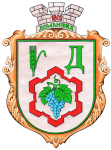
Доманівська селищна рада
Вознесенський р-н · Миколаївська область
UKRAINE · PARTNERSHIP
Доманівська
громада
громада
Domanivka Community: your entry point to Ukraine
Пропозиція до міжнародного партнерства та співпраці
Пропозиція до міжнародного партнерства та співпраці
Міжнародні партнери
🇺🇸USAID
🇩🇰DANIDA
🇩🇪GIZ
🇪🇺EU/BMZ
🇺🇳UNDP
🇺🇳IOM
🇳🇴NEFCO
🇺🇳UNOPS
Контакти
Viktor Vlasiuk · Head of Community
sr@domanivska-gromada.gov.ua
domanivska-gromada.gov.ua
fb.com/otgdomanivka
Громада на карті
Північ Миколаївщини: вузол між аграрним тилом, містами та логістикою.
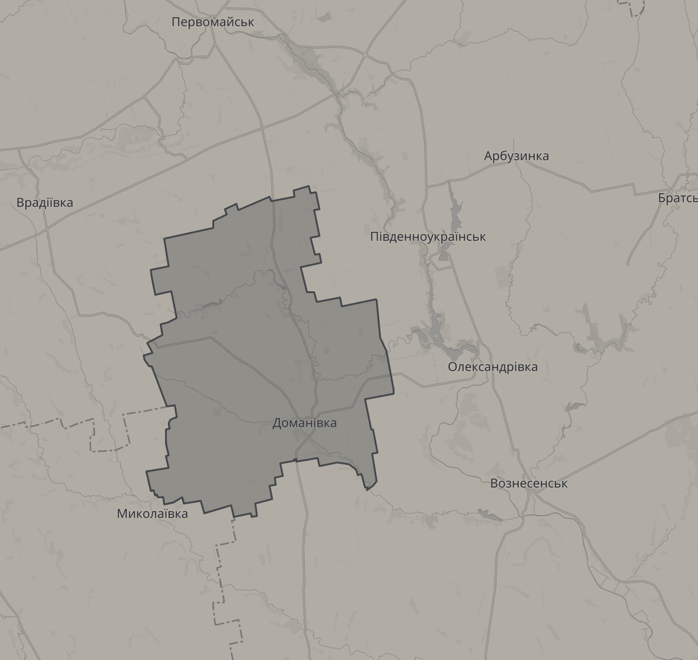
Доманівка
Первомайськ
Південноукраїнськ
Вознесенськ
Врадіївка
Арбузинка
Київ
364 км
364 км
ЄС напрямок
264 км Молдова · 692 км Румунія
264 км Молдова · 692 км Румунія
ЖД
ст. Трикрати · 31 км
ст. Трикрати · 31 км
порти
Миколаїв · Одеса
Миколаїв · Одеса
Адміністративний центр
Доманівка
31
населений пункт
6
старостинських округів
карта: Wikipedia / OSM
ключова ідея
Зручний вузол для проєктів відновлення.
Опорні міста, аграрні території, медицина та логістика в одному радіусі.
міський пояс поруч
Вознесенськ · Первомайськ
Південноукраїнськ
Сервіси, кадри, медицина та координація поруч.
логістичні коридори
137 км
порт Миколаїв
176 км
порт Одеса
364 км
Київ
31 км
ст. Трикрати
аграрний тил
чорноземний степ
ЄС напрямок
264 км · Молдова
692 км · Румунія
Громада в цифрах
Ключові показники · Профіль громади 2024.
14 401
мешканців · 01.01.2024
54.2% жінки · 45.8% чоловіки
54.2% жінки · 45.8% чоловіки
729.7km²
31 нп: смт + 30 сіл · 6 округів
3-тє місце в районі
3-тє місце в районі
65 143га
сільгоспугідь · 89% площі
53 954 га ріллі
53 954 га ріллі
57.4%
бюджету 2025 на освіту
5 шкіл · 8 садочків
5 шкіл · 8 садочків
1 087
ВПО зараз
3 000+ з початку 2022
3 000+ з початку 2022
13
закладів освіти
5 шкіл · 8 садочків
5 шкіл · 8 садочків
9
сонячних СЕС
загальна потужність 8.8 МВт
загальна потужність 8.8 МВт
18 проєктів
у реєстрі міжнародного фінансування
2023-2027
2023-2027
Чому тут вигідно робити проєкти
Готові ресурси, майданчики й команда для швидкого запуску партнерських ініціатив.
01
Аграрна база для переробки
63 543 га чорноземів, 110 фермерських господарств і 12 агропідприємств. Є сировина для проєктів у переробці, тепличному овочівництві, молочному напрямі та логістиці.
02
Енергетична стійкість
Пелетна лінія 1 т/год, 9 СЕС загальною потужністю 8.8 МВт, 53 кВт сонячної системи при лікарні та 30 кВт у «Оберіг-Агро». Це база для проєктів, які потребують прогнозованої енергії.
03
Готові майданчики й ресурси
Вільні ділянки у 4 селах, поклади вапняку, піску та глини, потенціал для зрошення, садівництва, СЕС і виробництва будівельних матеріалів.
04
Партнерська спроможність
Громада має досвід роботи з міжнародними партнерами, локальний супровід, звітність, співфінансування та бізнес-запит на гранти, кредити й спільні інвестиції.
Сільське господарство
Аграрний регіон · чорноземний степ
Сільгоспугіддя
63 543 га
89% площі · 53 954 га ріллі
Чорноземи · помірно-конт. клімат
Потенціал для зрошення та садівництва
Чорноземи · помірно-конт. клімат
Потенціал для зрошення та садівництва
Агробізнес
110 ферм
12 агрофірм
12 агрофірм
«Миколаївмолпром» — молочне виробництво
335 підприємців · 149 юросіб
335 підприємців · 149 юросіб
Культури
Пшениця · Ріпак
Соняшник
Соняшник
Сади · бджільництво
Тепличне овочівництво
Тепличне овочівництво
Теплиці · «Оберіг-Агро»
19 теплиць
+30 кВт СЕС
+30 кВт СЕС
Ветеранський кооп · органічний сертифікат
Огірки, томати, зелень
Огірки, томати, зелень
Логістика · Нібулон · Порти
137 км · Миколаїв
176 км · Одеса
176 км · Одеса
Нібулон: Врадіївський та Колосівський елеватори · 2.04 млн т · морський термінал Миколаїв
Тваринництво
Свинарство
Птахівництво
Птахівництво
Розвинуте присадибне та фермерське тваринництво · бджільництво
«Миколаївмолпром» — молочне
«Миколаївмолпром» — молочне
Агробізнес · ветеранський кооператив
СК «Оберіг-Агро» — тепличне овочівництво, органічний напрям і реінтеграція ветеранів.
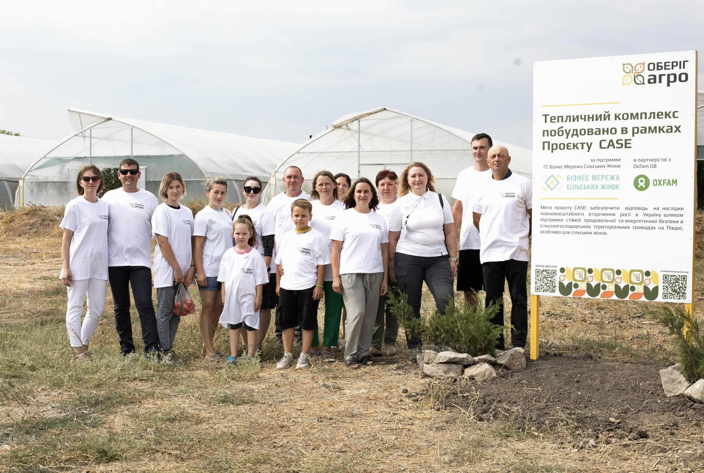
Оберіг-Агро
Бізнес, що виріс із ветеранської спільноти
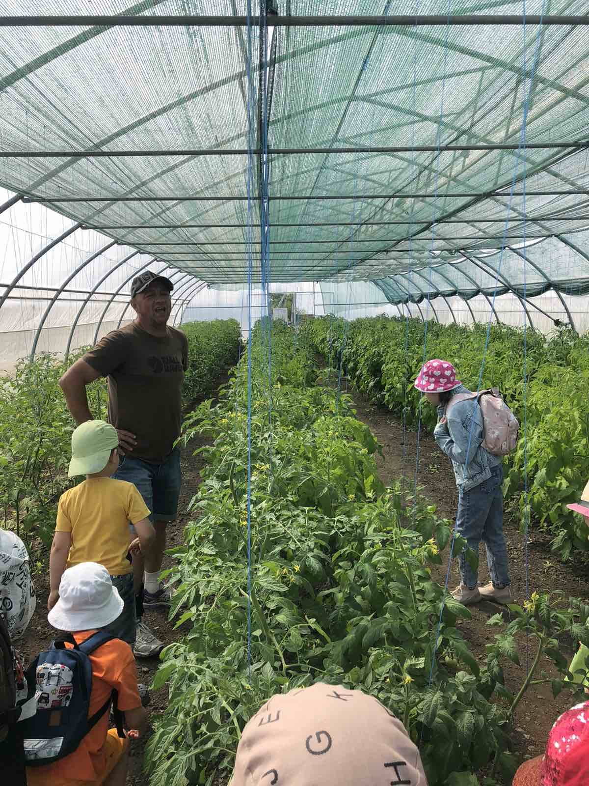
Тепличне господарство
Овочі, зелень, локальна продовольча безпека
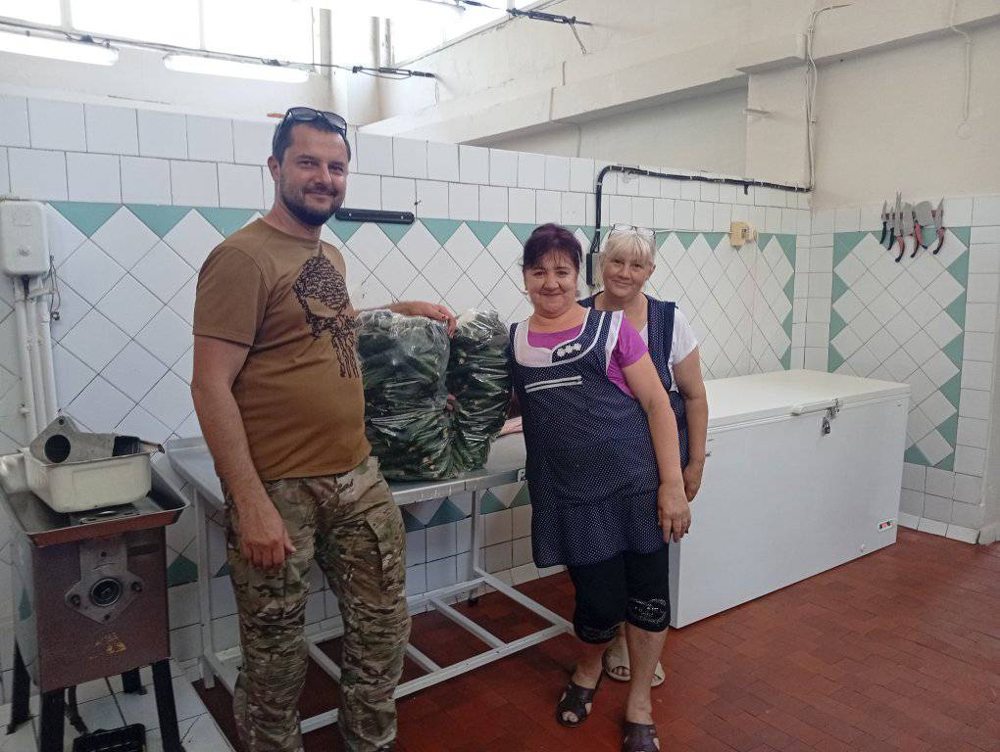
Продукція
Вирощування, пакування, збут
«Оберіг-Агро» показує, як ветеранський бізнес може одночасно створювати робочі місця, продукт і соціальну опору для громади.
Кооператив об'єднує людей навколо тепличного овочівництва та працює як модель економічної самозарадності після служби.
Ветеранська основа
Кооператив учасників бойових дій
Захисники України та родини загиблих воїнів об'єдналися, щоб мати власну справу і підтримувати громаду.
Тепличний напрям
19 теплиць
Огірки, томати та зелень. Проєкт CASE підтримав розширення кооперації й продовольчої безпеки громади.
Стійкість бізнесу
Органіка · 30 кВт СЕС
Органічний сертифікат і власна сонячна генерація підсилюють економічну та енергетичну незалежність кооперативу.
Енергонезалежність · Власне паливо
Громада виробляє пелети — 700+ тонн на місяць.
Оператор лінії · Доманівка
КП «Доманівська аграрно-паливна компанія»
Виробнича лінія (Данія)
Потужність 1 т/год
Виробництво
700+ т/міс
Понад 700 тонн щомісяця. ~10 нових робочих місць для громади.
Щорічна економія громади
3.5 млн грн
Школи, лікарня та комунальні заклади переходять на власне паливо.
Сировина — своя · «Закільцьований» цикл
- Енергетична верба та міскантус
- Солома, комиш, залишки деревини
- Надлишок продають сусіднім громадам
- Домовленості з Первомайськом
Паралельно опрацьовуємо
Власне самотюкування
Власна підготовка сировини без посередників — замикає виробничий цикл повністю.
Охорона здоров'я
Багатопрофільна лікарня — опорна допомога для Доманівської та сусідніх громад.
Доманівська багатопрофільна лікарня
Сучасне обладнання
Оновлені приміщення
Міжгромадська роль
Доманівська · Мостівська · Прибузька
Лікарня обслуговує не лише Доманівську громаду, а й пацієнтів із сусідніх громад.
Стаціонарна допомога
цілодобова підтримка
Терапія, педіатрія, хірургія, гінекологія та інші напрямки медичної допомоги.
Поліклініка
консультації і діагностика
Амбулаторно-поліклінічна допомога, лабораторна та ультразвукова діагностика.
Модернізація
ремонт · обладнання · енергостійкість
Оновлені приміщення, сучасне обладнання та автономні рішення для стабільної роботи.
Первинна медицина
ЦПМСД: контакт-центр, сімейні лікарі і маршрут пацієнта.
Контакт-центр
Запис, координація і доступність послуг
Сімейний лікар і прийом
Робота з пацієнтами
Мережа ЦПМСД
2 амбулаторії · 10 ФАПів
На території громади. Додатково поруч: 3 амбулаторії та мінімум 5 ФАПів у сусідніх громадах.
Сімейні лікарі
постійний контакт
Супровід родин, профілактика, консультації та направлення до потрібних спеціалістів.
Контакт-центр
запис і координація
Модернізація сервісу, щоб людям було простіше потрапити до лікаря.
Маршрут пацієнта
від запису до лікаря
Контакт-центр допомагає зорієнтуватися, записатися та отримати потрібну послугу.
Первинна медицина · села
Мобільна клініка, амбулаторії та ФАПи ближче до людей.
ФАПи с. Кузнецове та с. Петропавлівка · 2025
Нові модульні
амбулаторії
амбулаторії
Сучасні модульні заклади з пандусами, генераторами та сонячними панелями. Відкриті за підтримки міжнародних партнерів.
Мережа первинної медицини
- 2 амбулаторії ЦПМСД у громаді
- 10 ФАПів на території громади
- 3 амбулаторії у сусідніх громадах
- мінімум 5 ФАПів у сусідніх громадах
Мобільна клініка
ФАП с. Петропавлівка
ФАП с. Кузнецове
Освіта
57% бюджету громади — на освіту.
Школи громади
Шкільний автобус
Підвіз дітей із сіл
57.4%
місцевого бюджету 2025 — освіта
5
шкіл загальної середньої освіти
8
закладів дошкільної освіти
3
позашкільні заклади
Шкільний автобус
«Атаман»
Щоденний підвіз учнів із сіл. Придбано за підтримки UNOPS та Королівства Данія.
Дитсадки
8 закладів
Дошкільна мережа для дітей громади та підтримка родин у селах.
Позашкілля
Музика · спорт · творчість
Музична школа, спортивна школа та Будинок творчості.
Інклюзія та підтримка
Інклюзивно-ресурсний центр, психолого-педагогічні послуги та центр реабілітації дітей «Промінець».
Спорт · Доманівка
Доманівка: гандбол, волейбол і футбол.
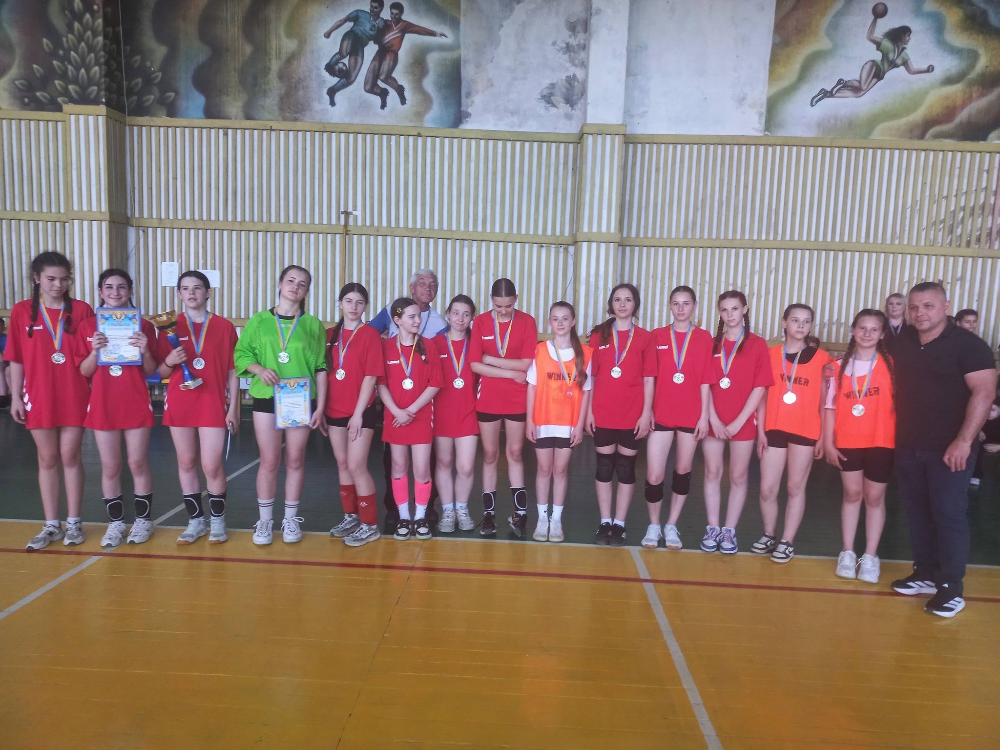
Гандбол
Покоління спортсменів
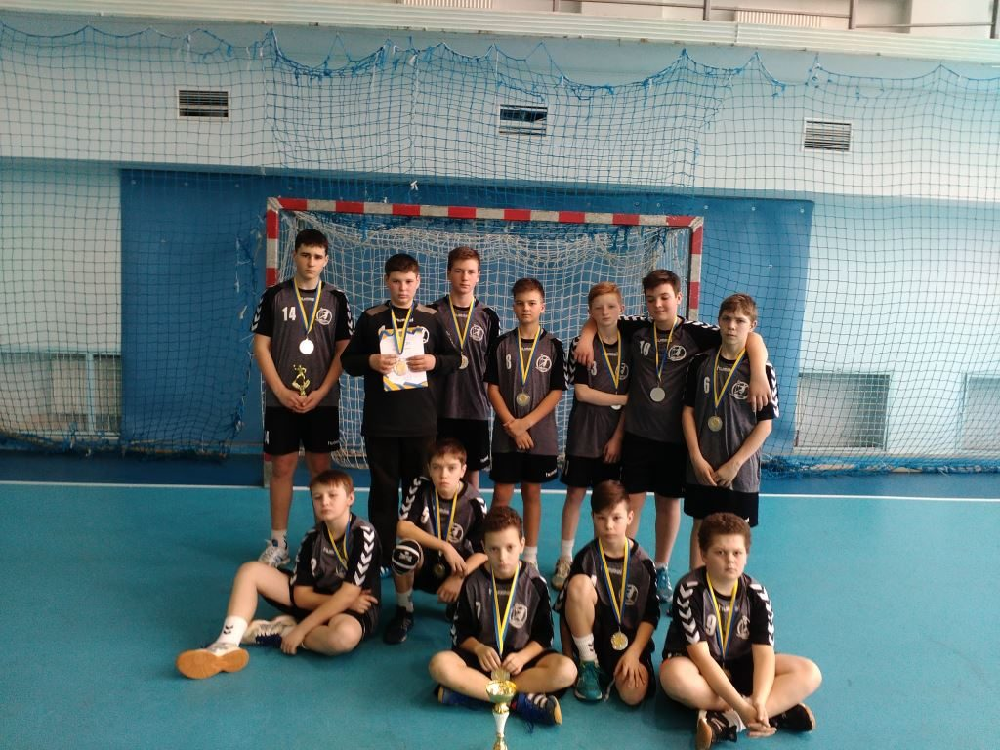
Гандбол
Командний розвиток
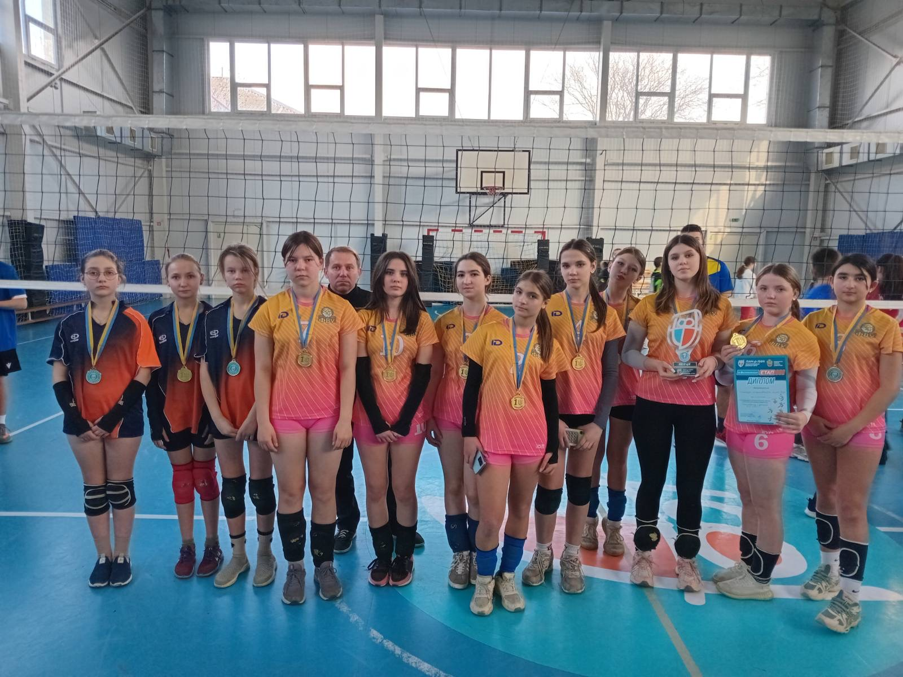
Волейбол
Командна гра
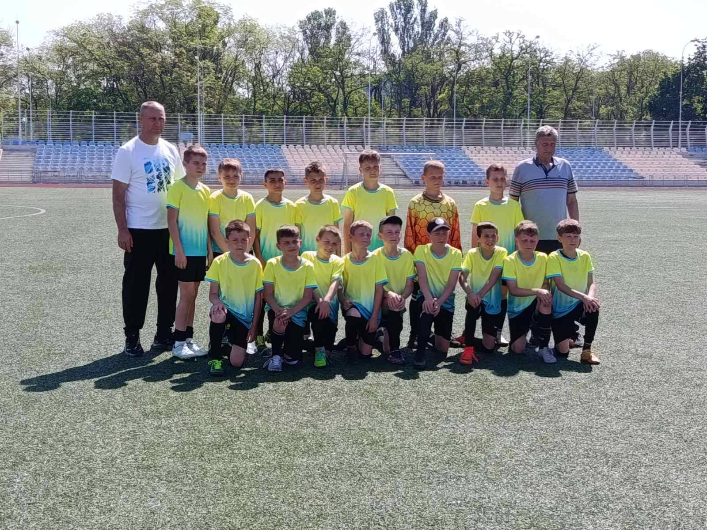
Футбол
Дитяча команда
Спорт у Доманівці розвивається і об'єднує громаду.
Тренування, турніри і командний дух — важлива частина активного життя дітей та молоді.
Гандбол
Сильна традиція
Волейбол
Командна гра
Футбол
Активна молодь
Освіта · Ліцей «Успіх»
STEM-лабораторія для практичного навчання та інженерного мислення.

Ліцей «Успіх»
Сучасні технології в навчальному просторі

Робототехніка
Моделі, датчики, інженерне мислення

3D-друк
Від ідеї до готової моделі
Ліцей «Успіх» формує середовище, де діти навчаються через дослідження, моделювання і практику.
STEM-простір допомагає учням працювати з сучасним обладнанням, перевіряти власні ідеї та бачити результат навчання у створених моделях.
STEM-лабораторія
3D-друк · моделювання · робототехніка
Учні опановують інструменти, які поєднують природничі науки, технології, інженерію та математику.
Практичні навички
Проєктне навчання
Робота з моделями, датчиками та друком розвиває логіку, точність і командну взаємодію.
Можливості для дітей
Сучасна освіта поруч
Такий простір робить технології доступними для школярів громади та підтримує інтерес до інженерних професій.
Позашкілля · Будинок дитячої творчості
Гончарна майстерня Доманівської громади.
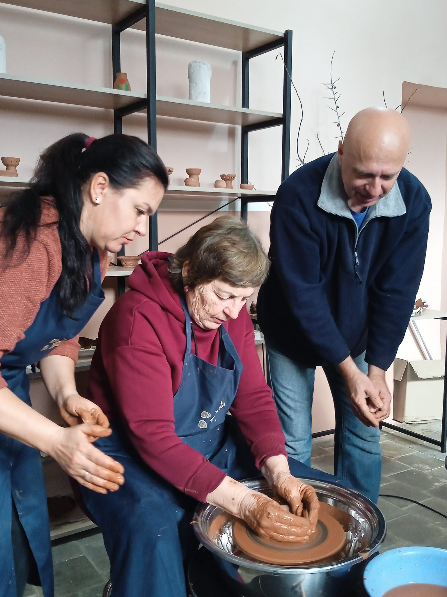
Гончарна майстерня
Творчість, ремесло і навчання через руки
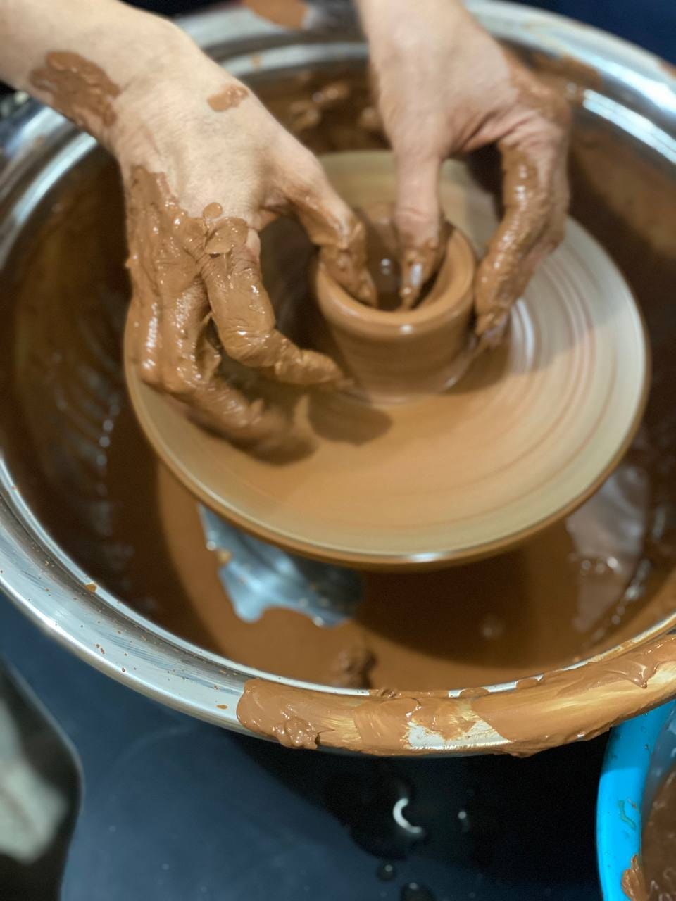
Майстерність
Створення виробів із глини
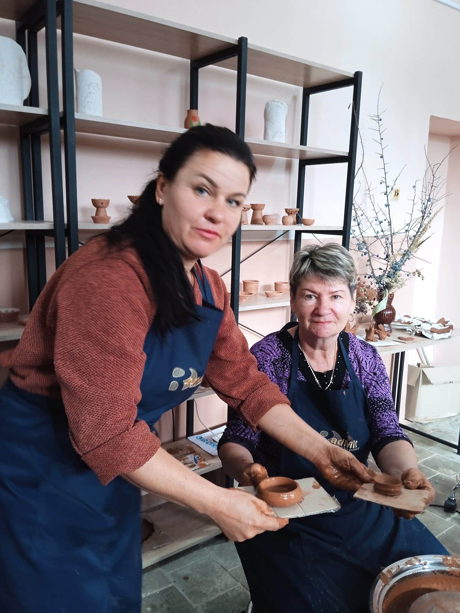
Майстеркласи
Для дітей і дорослих
У Доманівському будинку дитячої творчості працює гончарна майстерня.
Це місце, де мешканці громади можуть навчитися створювати вироби з глини та відкривати для себе традиційне ремесло в сучасному форматі.
Для всіх охочих
Навчання роботі з глиною
Майстерня відкрита для тих, хто хоче спробувати гончарство та власноруч створити виріб.
Дорослі
Майстеркласи
Для дорослих організовують майстеркласи, де можна познайомитися з техніками роботи на гончарному крузі.
Діти
Постійні заняття
Діти можуть відвідувати заняття постійно, розвиваючи увагу, дрібну моторику та творче мислення.
Культура
Культурний потенціал Доманівської громади
Основа культурного життя
Творчість, професіоналізм і два колективи зі званням «народний».
Артисти Доманівського базового будинку культури є лауреатами обласних та всеукраїнських конкурсів і фестивалів, гідно представляючи громаду на найвищих рівнях.
Народний духовий оркестр
«Фестиваль»
- Заснований у 2004 році
- Звання «народний» отримав у 2005 році
- Постійний учасник знакових культурних подій громади
Вражає слухачів енергією, злагодженістю та виконавчою майстерністю.
Народний вокальний ансамбль
«Нові Обрії»
- Працює з кінця 1995 року
- Звання «народний» отримав у 1996 році
- Зберігає і примножує традиції вокального мистецтва краю
Зачаровує глядачів багатоголоссям і сценічною культурою.
.jpg)
Народний духовий оркестр
«Фестиваль»
.jpg)
Народний вокальний ансамбль
«Нові Обрії»
2
колективи зі званням «народний»
10
закладів культури у громаді
Духовна спадщина · свобода совісті
Доманівська громада поважає релігійні традиції мешканців і береже місця, де формується довіра та взаємна підтримка.
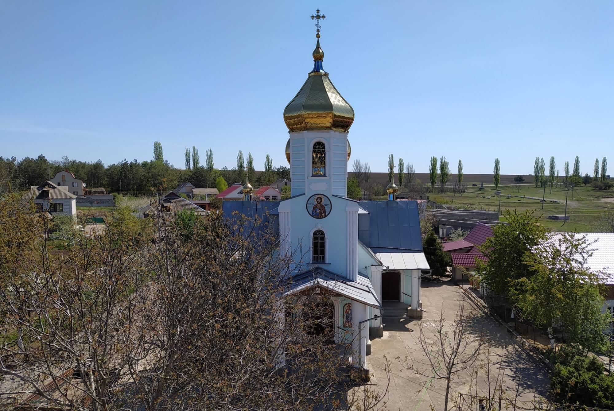
релігійна спадщина
Простір тиші, пам'яті та спільності.
позиція громади
Повага до віри та гідності людини
Громада підтримує культуру взаємної поваги, діалогу та добросусідства між мешканцями.
соціальна роль
Місця, що тримають людей разом
Храми залишаються просторами пам'яті, підтримки, волонтерства та людської присутності.
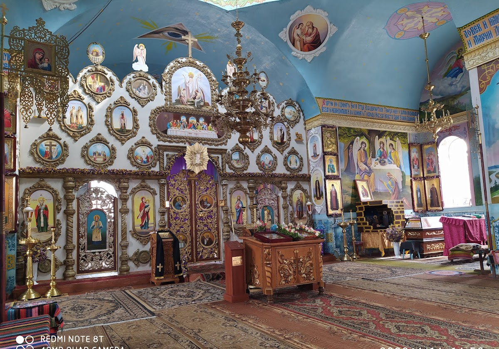
Історична пам'ять
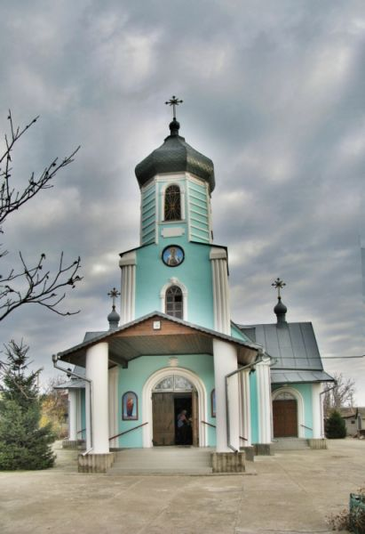
Традиції родин
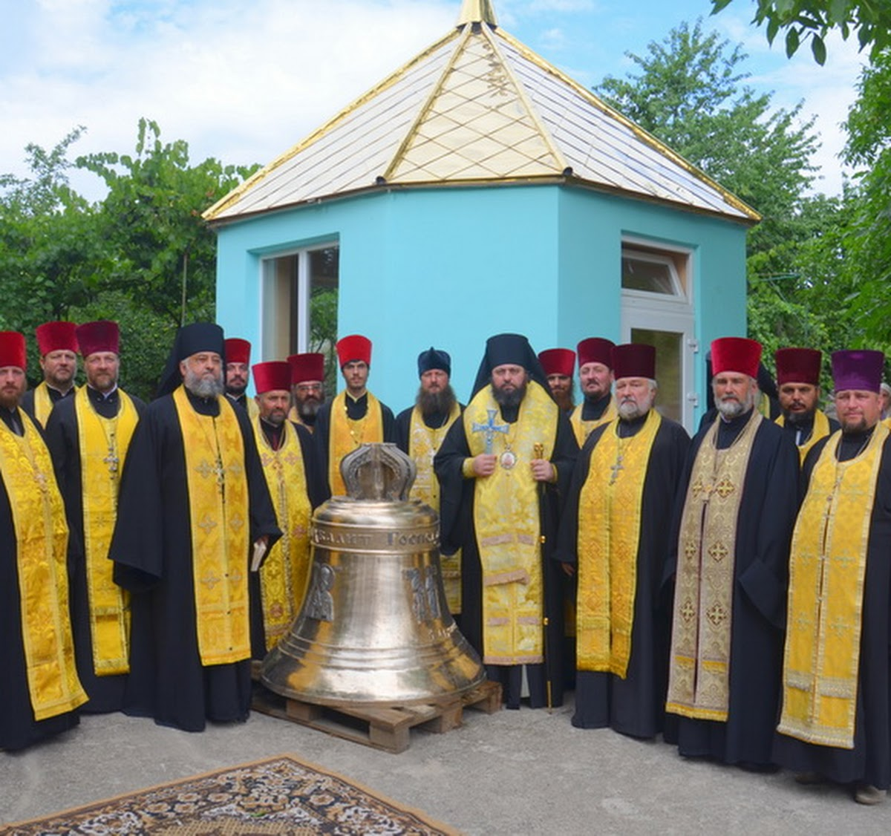
Культурна тяглість
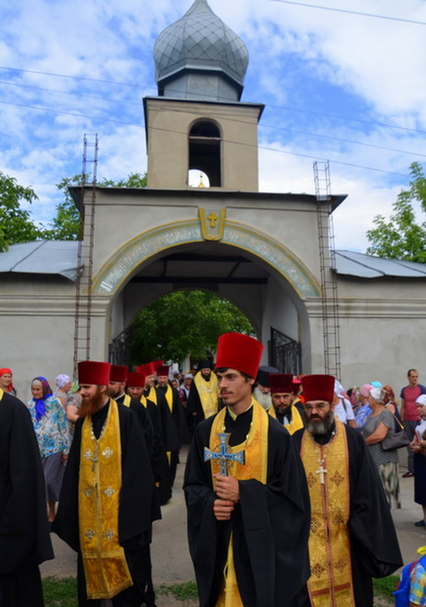
Спільнотне життя
Внутрішньо переміщені особи · ВПО
Модульні будинки від данських партнерів — зведено і заселено.
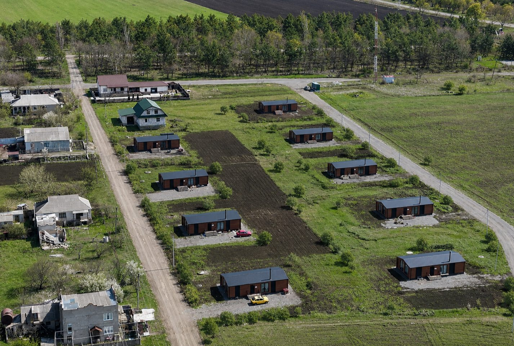
Зведено і заселено
9 модульних будинків для ВПО
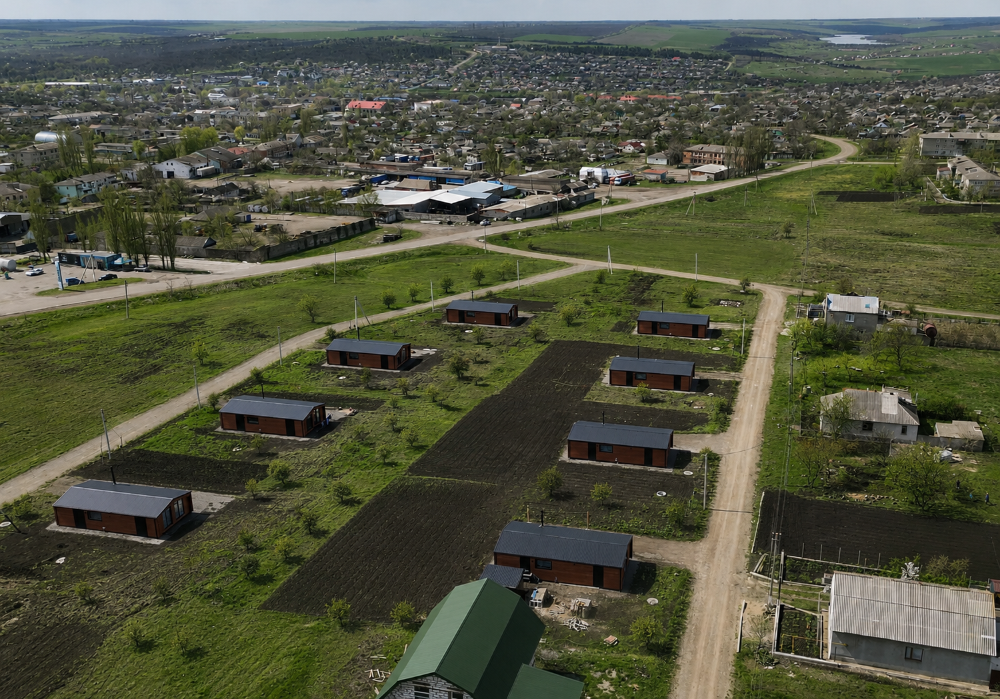
Новий житловий простір у громаді
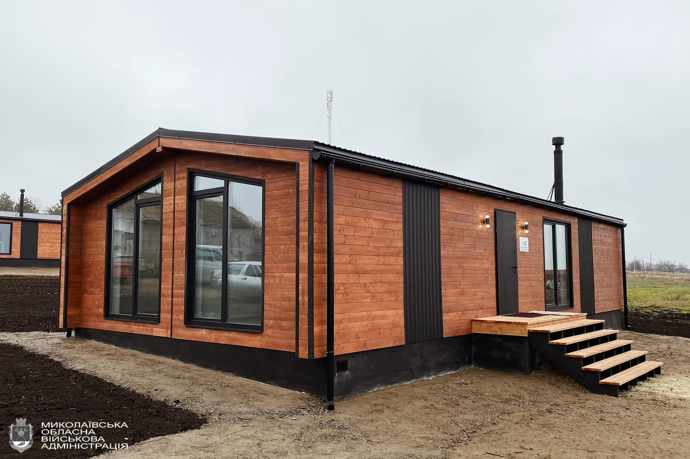
Будинки готові до проживання
9
будинків зведено
31
людина вже проживає
+6
будинків у наступному етапі
триває
проєкт продовжується
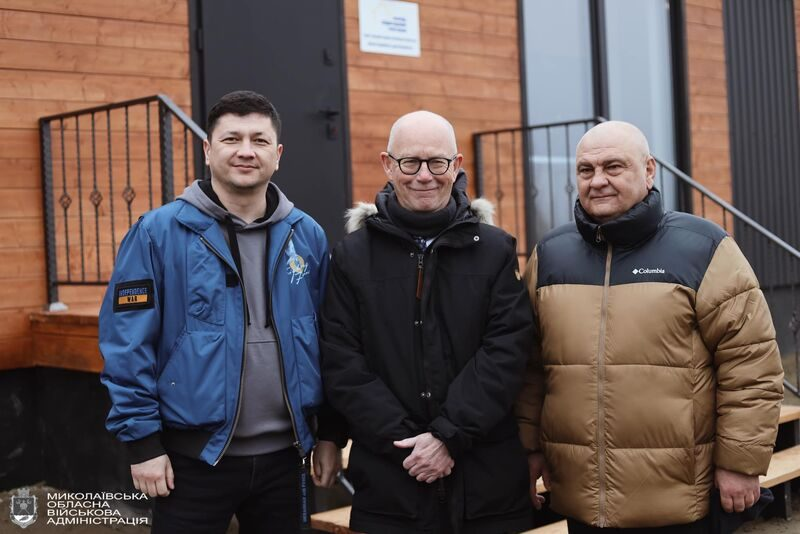
партнерство
Данські партнери
Модульне житло створене за підтримки партнерів; співпраця продовжується.
ВПО у громаді
1 087 на обліку
З початку 2022 року громада прийняла понад 3 000 внутрішньо переміщених осіб.
наступний крок
Ще 6 будинків
Проєкт розширюється, щоб дати більше постійного житла людям, які знайшли прихисток у Доманівській громаді.
18 міжнародних проєктів
Реєстр проєктів за міжнародні кошти та кошти країн-партнерів.
| Проєкт | Статус | Партнер / Донор | Сума / Строк |
|---|---|---|---|
| CASE: тепличний комплекс «Оберіг-Агро» | Реалізовано | Oxfam | 32,0 млн грн · 2023-2024 |
| SURGe · «Сади Перемоги» | Реалізовано | Уряд Канади · Alinea · CDF Canada | 800 тис. грн · 2024 |
| «Людський вимір» | Реалізовано | МОМ · ЗУРЦ · Уряд Канади | 439,5 тис. грн · 2024 |
| «Міцні Регіони»: лікарня та ЦПМСД | Реалізовано | ЄС · BMZ | 15,6 млн грн · 2024 |
| Підзвітність ОМС і КП | Реалізовано | USAID «Говерла» | 12,9 млн грн · 2025 |
| 9 модульних будинків для ВПО | Завершується | Фонд відбудови України · уряд Данії | 22,1 млн грн · 2026 |
| Біопаливні технології | Реалізується | Країни-партнери | 9,0 млн грн · 2026 |
| Свердловина в Царедарівці | Стадія завершення | ГО «Десяте квітня» · ЄС | 4,49 млн грн · 2025-2026 |
| СЕС для лікарні та ЦПМСД | Реалізовано | GIZ | 2,72 млн грн · 2024 |
| Водогін Зброшкове - Доманівка | Підготовка до робіт | НЕФКО · уряд Данії · громада | 82,5 млн грн · до 30.09.2027 |
Водопостачання · NEFCO · Данія
Водогін Зброшкове — Доманівка: вода як інфраструктура відновлення.
Зброшкове
підземне джерело
Доманівка
адміністративний центр
маршрут водогону
магістраль
6 709 м
майже 7 км від свердловини до селища
діаметр
250 мм
нова магістральна труба
живлення
СЕС
сонячні панелі для насосної
фінансування
€1.47 млн
Грант для Доманівки: кошти уряду Данії, адміністрування NEFCO та співфінансування громади.
що будується
водогін
Зброшкове → Доманівка
резервуари
стабільний запас води
насосна
тиск у системі
автоматика
контроль втрат
ефект для громади
надійна питна вода для понад 6 тис. мешканців
Проблема дефіциту води переходить із кризового режиму в керований інфраструктурний проєкт.
перша черга
до кінця 2026
партнерський трек
Данія · NEFCO
Міжнародні партнери та донори
Проєкти з реєстру: партнери, суми, об’єкти реалізації.
Oxfam · Канада · CDF
Агро та продовольча безпека
- CASE: тепличний комплекс «Оберіг-Агро» — 32,0 млн грн
- SURGe «Сади Перемоги» — 800 тис. грн
- 2023-2024 · с-ще Доманівка
Теплиці · продбезпека · кооперація
ЄС · BMZ · GIZ
Медицина та енергія
- «Міцні Регіони» — 15,6 млн грн
- СЕС для лікарні — 2,158 млн грн
- СЕС для ЦПМСД — 564 тис. грн
- Капремонт поліклініки — 8,62 млн грн
Лікарня · ЦПМСД · енергонезалежність
МОМ · ЗУРЦ
Гуманітарна та медична підтримка
- «Людський вимір» — 439,5 тис. грн
- Ремонт 2 поверху ЦПМСД — 6,19 млн грн
- ФАП с. Петропавлівка — 6,0 млн грн
Управління · медицина · сільські ФАПи
USAID «Говерла» · UNDP
Інституційна спроможність
Підзвітність ОМС та КП — 12,95 млн грн. Мобільний ЦНАП «Миколаїв відновлений» — 2,93 млн грн.
Управління · комунальні послуги · мобільний ЦНАП
Фонд відбудови України · уряд Данії
Житло, медицина, освіта
9 модульних будинків — 22,06 млн грн. ФАП с. Кузнецове — 2,88 млн грн. Шкільний автобус — 3,84 млн грн.
ВПО · сільська медицина · підвіз учнів
НЕФКО · Данія · громада
Водопостачання
Реконструкція зовнішніх мереж від Зброшкового до Доманівки — 71,7 млн грн міжнародних коштів + 10,84 млн грн місцевого співфінансування. Строк — 30.09.2027.
Водогін 6 709 м · підготовка до робіт
Принцип:
У презентації показані проєкти з реєстру міжнародного фінансування громади: реалізовані, ті що завершуються, і ті, що вже мають підтверджений партнерський трек.
ЦНАП · мобільні послуги · доступність
Адміністративні послуги ближче до людей: оновлений ЦНАП у Доманівці та виїзди в старостинські округи.
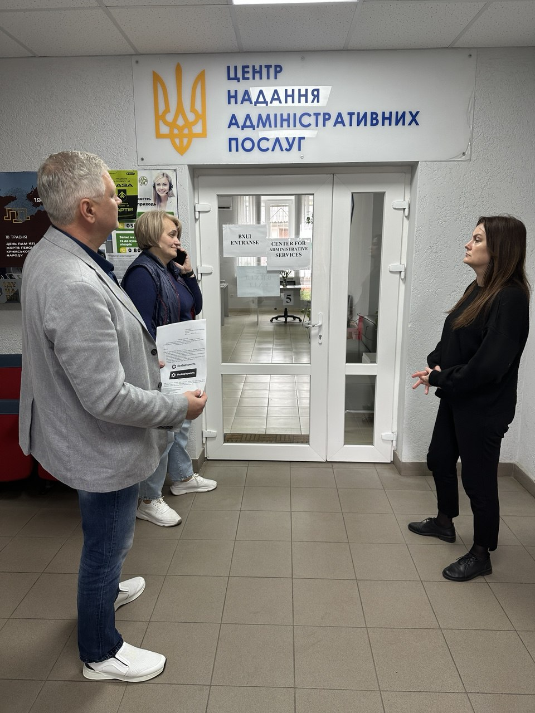
с-ще Доманівка
Оновлений вхід до сервісного хабу громади.
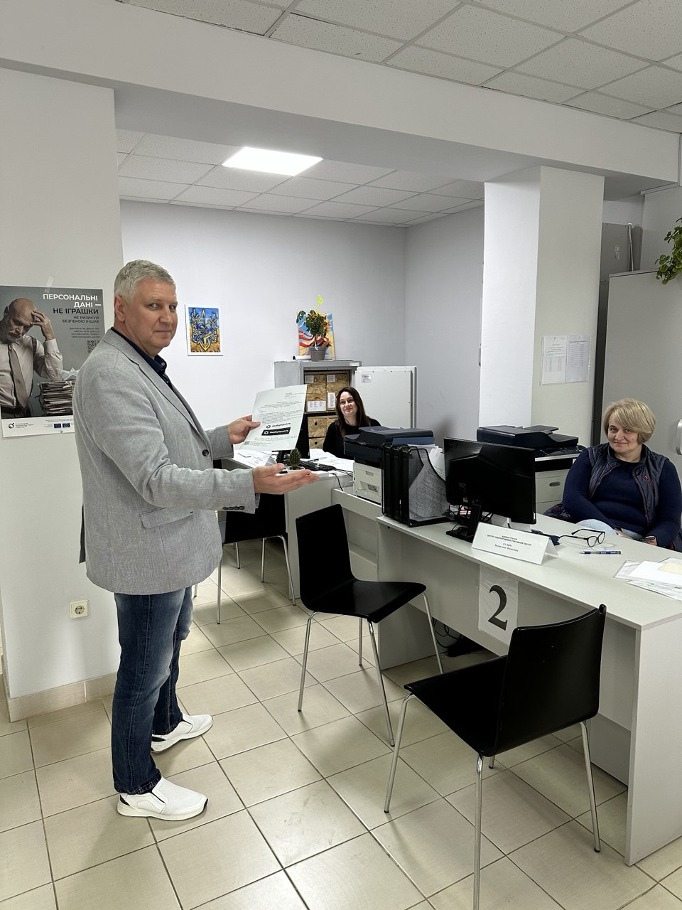
офіс ЦНАП
Робочі місця для швидкого прийому мешканців.
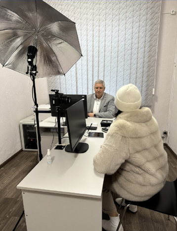
прийом у громаді
Адміністративні послуги без зайвих бар'єрів.
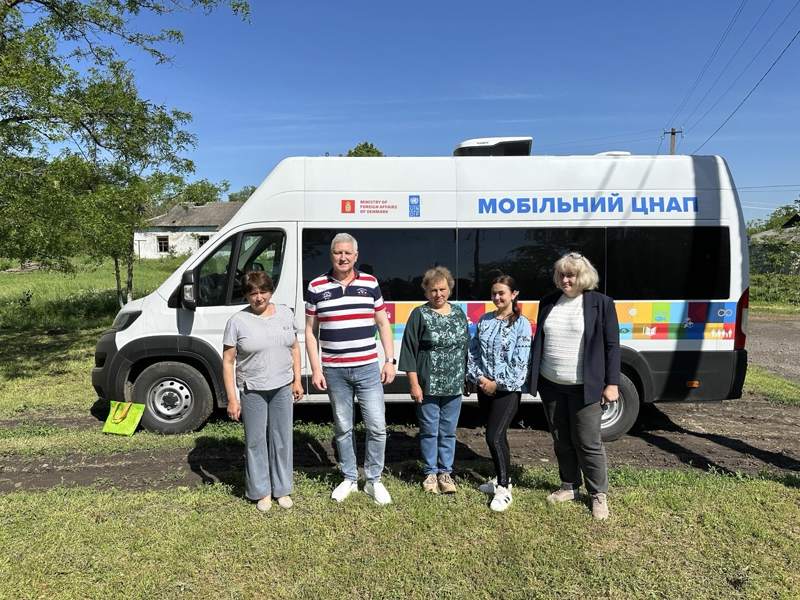
22.05.2026 · Петропавлівський округ
Виїзне робоче місце для віддалених сіл.
партнерська підтримка
Данія · UNDP
Спеціалізований автомобіль передано громаді в межах проєкту «Миколаїв відновлений» для сервісу «Мобільний ЦНАП».
для кого
мешканці, які не можуть самостійно відвідати офіс
Виїзди зменшують транспортний бар'єр і наближають послуги до людей старшого віку, маломобільних жителів та віддалених населених пунктів.
послуги під час виїздів
нерухомість
реєстрація речових прав
місце проживання
реєстраційні дії
земля
земельні питання
соціальний захист
консультації та прийом
Доманівка показує сервісну модель: ремонт/оновлення офісу в центрі громади плюс мобільний формат для сіл.
Потреби громади
П'ять задач, які хочеться вирішити разом: екологія, дороги й робочі місця.
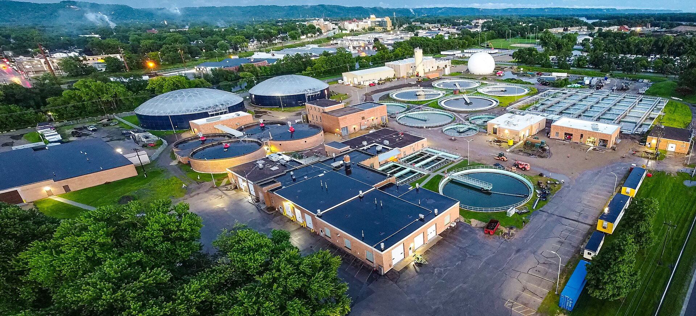
очисні споруди
Стічні води мають стати інфраструктурою, а не ризиком.
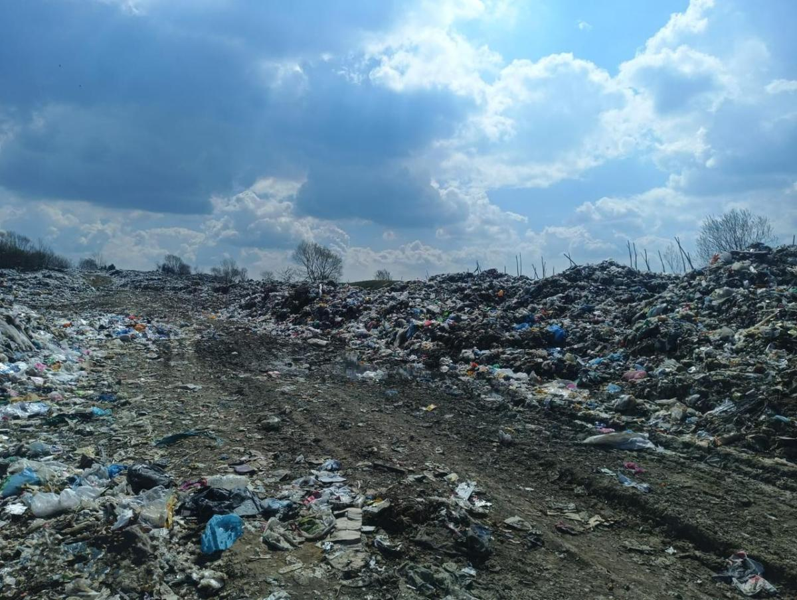
відходи
Полігон під контролем.
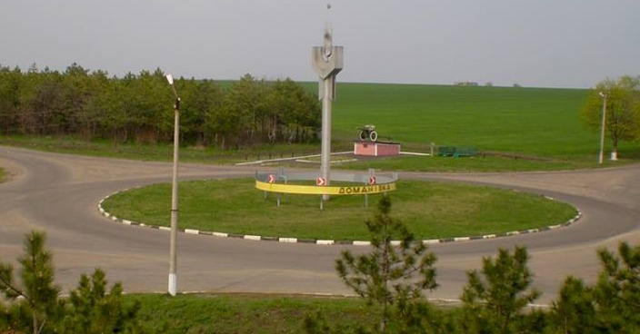
дороги
Доступ до послуг і бізнесу.
01
Будівництво очисних споруд
Проєктування й запуск сучасної системи очищення для зменшення навантаження на ґрунти, водойми та санітарний стан населених пунктів.
02
Полігон побутових відходів
Легальний майданчик, під'їзди, сортування, облік і екологічний контроль замість хаотичного накопичення сміття.
03
Замулені річки
Розчищення русел, укріплення берегів і відновлення водного режиму, щоб зменшити застій води, підтоплення та деградацію малих річок.
04
Оновлення дорожнього покриття
Пріоритет — стратегічно важливі напрямки до медицини, освіти, адміністративних послуг, аграрної логістики та міжгромадських маршрутів.
05
Робочі місця в приватному бізнесі
Умови для малого виробництва, переробки, сервісів, тепличних і ветеранських ініціатив, які залишають додану вартість у громаді.
пакет для партнера
Від проблеми до проєкту
Громада готова готувати технічні завдання, співфінансування, земельні рішення, комунікацію з мешканцями та супровід впровадження.
Це один портфель потреб: санітарна безпека, контроль відходів, живі русла, доступність доріг і нові робочі місця.
Що отримує партнер
Партнерство з Доманівкою дає видимий результат, локальну команду і основу для спільних заявок.
01
Видимий вплив на місці
Проєкти швидко перетворюються на конкретну послугу: вода, медицина, освіта, енергія, дороги, підтримка ВПО чи ветеранські ініціативи.
02
Спільні заявки і фонди
Громада готова бути партнером у грантах, інвестиційних програмах, міжмуніципальній співпраці та пілотах із масштабованим результатом.
03
Контакти й обмін
Партнер отримує живу громаду для культурного, освітнього, молодіжного, бізнесового та експертного обміну між командами.
04
Прозоре впровадження
Команда на місці супроводжує документи, візити, комунікацію, співфінансування і показники результату після запуску.
Поговорімо
Найкращий спосіб зрозуміти Доманівку — приїхати.
Доманівку регулярно відвідують міжнародні партнери: посол Королівства Данії Оле Егберг Міккельсен оглядав модульне житло для ВПО разом із Віталієм Кімом та Віктором Власюком; 15.05.2025 делегація ЄС відвідала модульний ФАП у с. Кузнецове та проєкти громади.
Partnership coordinator
Viktor Vlasiuk
Head of Domanivka Community
Address and social media
Domanivka settlement
Voznesensk district
Mykolaiv region, Ukraine
Voznesensk district
Mykolaiv region, Ukraine
47°37′39″N · 30°58′43″E
Next step · Запрошуємо до партнерства
Ознайомчий візит або онлайн-зустріч · Вода · Медицина · Енергетика · Дороги · Інвестиції · Ветерани · ВПО · Культура · Спорт
Джерело: Профіль громади · Доманівка · 2024
ДЕЛЕГАЦІЯ ЄС · 15.05.2025
Модульний ФАП у с. Кузнецове
Партнерський візит до проєктів громади